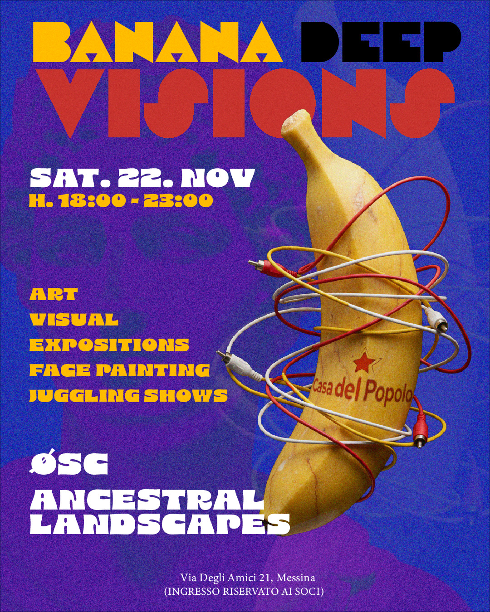
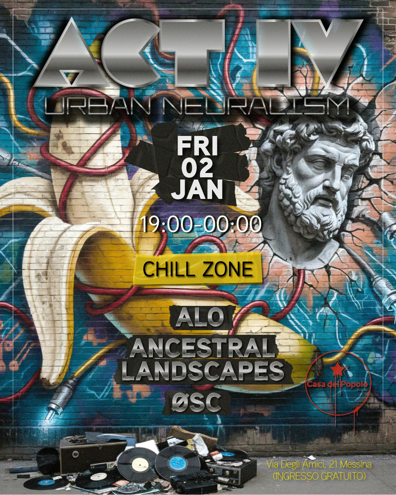

Un progetto che vive su due livelli paralleli: la grafica promozionale per ogni serata e il sistema visivo live che accompagna le performance sul posto. Entrambe le dimensioni parlano lo stesso linguaggio — dark, denso, underground.
Grafica: locandine costruite attorno a soggetti generati con AI, poi rielaborati interamente in Photoshop — ritocco, compositing, elementi tipografici e layout personali. Alcuni elementi (come il logo tappo di bottiglia) sono stati disegnati tramite ricalco vettoriale in Illustrator. Le locandine sono state animate in After Effects e con Adobe Firefly.
Live system: motore visivo audio-reattivo costruito in TouchDesigner. Sincronizzazione temporale tramite absolute time, controllo dei parametri in tempo reale via MIDI hardware durante le performance. Il materiale include clip originali registrate con movie file out dalle evoluzioni di oggetti 3D in TouchDesigner.


Visual generativi audio-reattivi creati in TouchDesigner, controllati live via MIDI.
Spezzoni dalle serate e dal setup live.